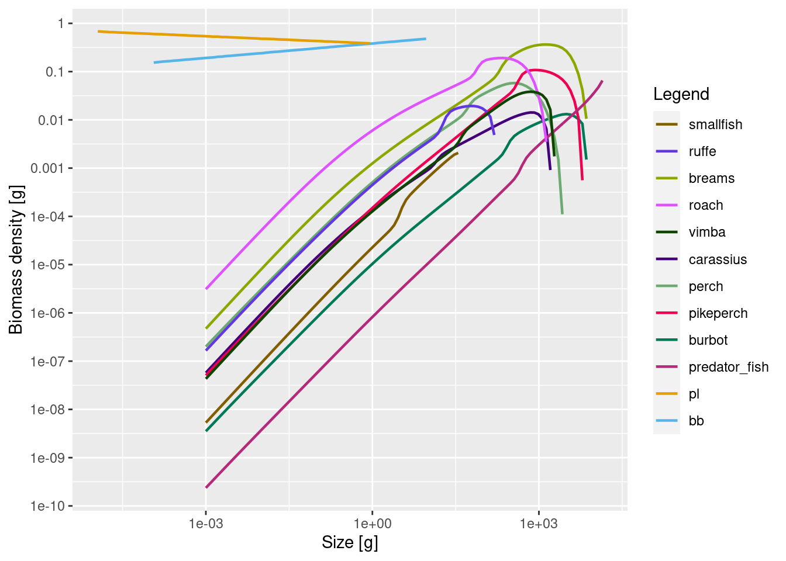
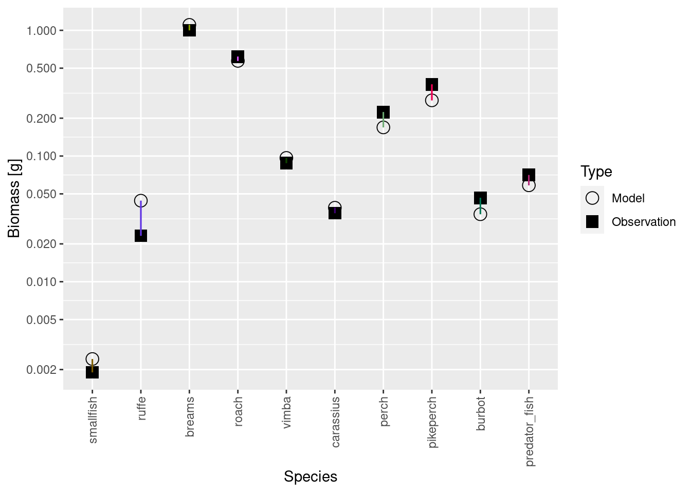
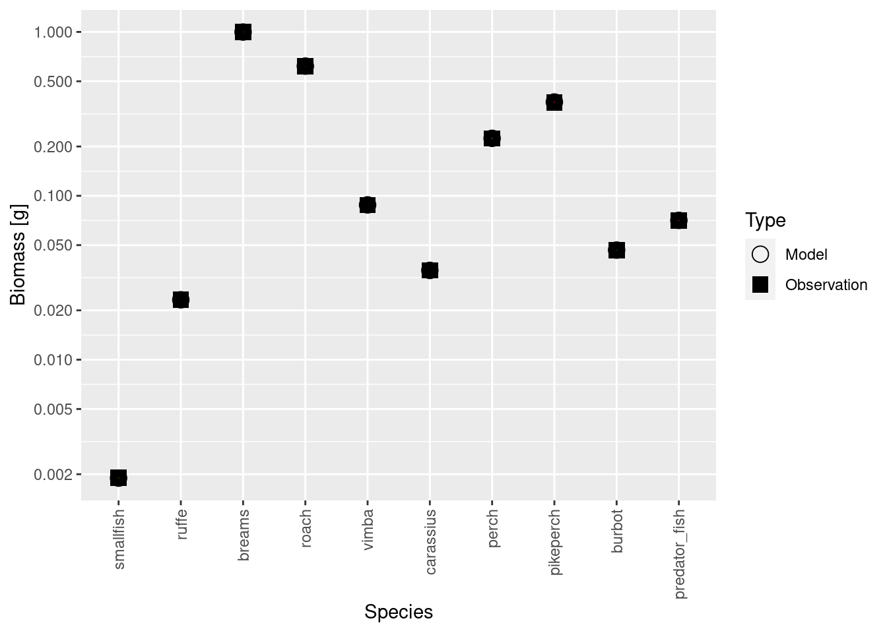
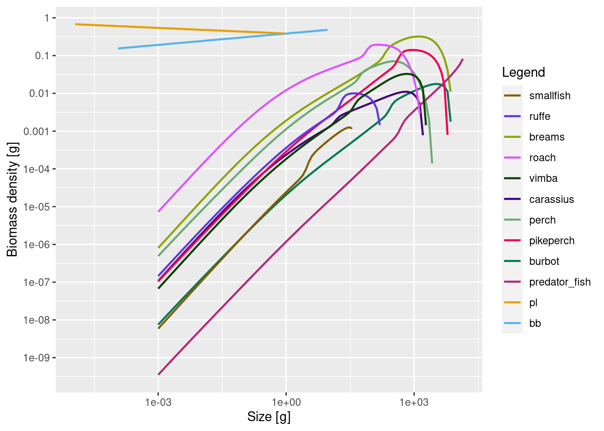
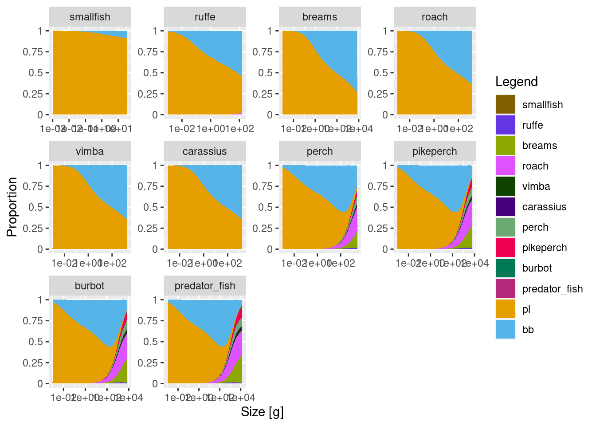
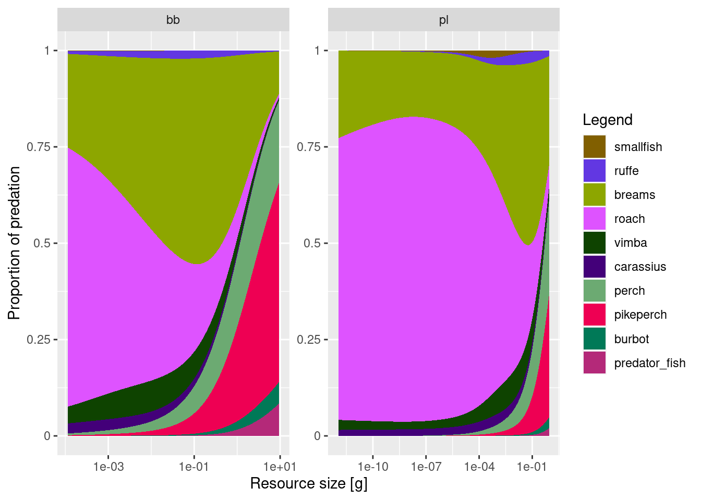
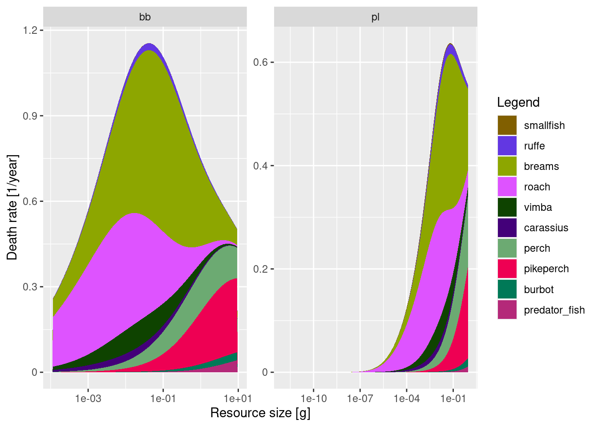

Setting up multiple resources
Introduction
Most mizer models simulate multiple size structured species and one background resource. But what if you want to account for different types of ‘resources’ with different dynamics? The most obvious case is the separation of pelagic and benthic resource. Benthic resource may not be important for offshore or pelagic ecosystems, but if you want to model coastal or freshwater ecosystems this may become essential.
Adding benthic resource into multi-species and size based models is not new. Some researchers incorporate benthic food sources by explicitly modelling key benthic species as size-structured groups. This is fine if you have data on their biomases for calibration and if you are interested in their dynamics, but modelling many benthic species separately might be overwhelming. Instead, just like with plankton species, we might want to model all benthic organisms as a separate resource spectrum. That is what the mizerMR extension does.
The origin of mizerMR is a model for Tasmanian coastal rocky reef ecosystem, where most large fish are not predators (like in a classical size based marine ecosystem), but feed on benthic invertebrates. In such reefs, benthic production pathway is likely to be a major source of energy. The mizerMR framework has also been used in a Baltic Sea mizer model and a south-east Australian mizer model. There are other ways to incorporate benthic resources, and you can find some examples here, here and here, but none of these approaches are currently implemented in the main mizer code.
The Curonian Lagoon is a shallow water productive ecosystem, where benthic production constitutes an important source of energy. Like in many other coastal ecosystems, the most common species are benthivores.
In this tutorial we will modify our basic mizer model by adding an explicit benthic size structured resource.
Step 1: Load mizerMR
mizerMR is an extension to the mizer package and it demonstrates a flexible way of adding new features, contributed by the mizer modeller community. If you modify mizer to add new features, please consider making an extension package and making it available for all mizer users.
Step 2: Set new resource parameters
Now we load the model parameter file that we saved in the previous tutorial (you will use the file with your parameters from the exercise in the previous tutorial).
# Start with existing single species params
cur_model <- readRDS("cur_model_single.rds")Next, we need to add resource parameters for the benthic resource. We will go into the details of resource dynamics and its parameters in week 3 of this course. For now we just need to know that the steady state abundance of each resource is defined by four resource parameters. Like the species parameters, these resource parameters need to be provided in the form of a data frame, with one row for each resource and one column for each resource parameter. You could put the parameters into a spreadsheet, save it as a .csv file, and then import it into R, as we did for the species parameters. Here instead we will create the data frame directly in R. The columns we need are:
-
resource- name for the resource -
kappa- resource overall abundance. It sets the ‘height’ of the resource spectrum. Strictly speaking this is resource abundance (g per unit area of your study) of resource at the size of 1g. -
lambda- slope of the resource spectrum. -
w_max- largest size of the resource. -
w_min- smallest size of the resource.
Planktonic paramters
For our plankton resource we use similar parameters to those for our existing single resource. Let us look at those first. Because our model is currently set up only with a single resource, the resource parameters are not in a data frame with one row for each resource but are simply a list:
resource_params(cur_model)$kappa
[1] 0.3831571
$lambda
[1] 2.05
$r_pp
[1] 10
$n
[1] 0.75
$w_pp_cutoff
[1] 10We see that this list contains also parameters that we ignore for now because they are about the dynamics rather than the steady state abundance. Also, for historical reasons, the maximum size w_max is called w_pp_cutoff in the above list. We will keep the lambda and kappa parameters for the plankton spectrum.
kappa <- resource_params(cur_model)$kappa
lambda <- resource_params(cur_model)$lambdaWe will reduce the maximum size of the plankton spectrum from the current value of 10 grams (which corresponds to about 10cm long fish!) to 1 gram.
w_max <- 1 To choose a minimum size we look at the current minimum size which we can find in the first entry in the vector of size bins:
w_full(cur_model)[[1]][1] 9.533877e-13We round this to 10^{-12}. (There is currently a problem if you try to use exactly the floating point value above, because due to rounding errors R will think that it is actually smaller than the existing smallest size and will issue an error message.)
w_min <- 1e-12Benthic parameters
Now we need to make decisions about the parameters for the benthic spectrum. We are aiming to reproduce ontogenetic diet shifts, where species start feeding on plankton and then may transition into the benthic spectrum. This means that, as plankton abundance decreases, benthos abundance should become relatively higher. To achieve that, we will start the benthos spectrum from a larger minimum size, extend it to much larger size than plankton spectrum, and have shallower slope for the benthos spectrum.
Ideally, you would have size based benthos abundance or biomass data and fit a linear model to get the slope. This was done for the Tasmanian model (see supplementary materials in this preprint). For the Curonian lagoon we do not have such data, so we will just assume a slope of 1.9 instead of 2.05, but keep kappa equal for now. The benthic spectrum will extend to 10 grams to represent largest benthic invertebrates and some cryptic small benthic fish not explicitly included in the model.
We will save all resource parameters in separate variables, so we can use them later.
# Set benthos kappa same as plankton kappa
kappa_ben <- kappa
# Assume more shallow slope for benthos
lambda_ben <- 1.9
# Set maximum benthos size
w_max_ben <- 10
# Benthos starts at larger sizes, corresponding to about 1-2mm
w_min_ben <- 0.0001Now we put all these resource parameters into a data frame.
curonian_resource_params <- data.frame(
resource = c("pl", "bb"),
lambda = c(lambda, lambda_ben),
kappa = c(kappa, kappa_ben),
w_min = c(w_min, w_min_ben),
w_max = c(w_max, w_max_ben)
)
curonian_resource_paramsWe can now update our Curonian model to use these resource parameters with
resource_params(cur_model) <- curonian_resource_paramsThe resource carrying capacity has been commented and therefore will not be recalculated from the resource parameters.Step 3: Set resource interactions
The next and most interesting step is to define the availability of each resource to our model species. This is where our biological and ecological knowledge comes in, but we may need to adjust these values to ensure we get the expected ontogenetic diet shifts.
By default all resource interactions are set to 1.
resource_interaction(cur_model) resource
sp pl bb
smallfish 1 1
ruffe 1 1
breams 1 1
roach 1 1
vimba 1 1
carassius 1 1
perch 1 1
pikeperch 1 1
burbot 1 1
predator_fish 1 1In this simple model we will assume that largely planktivorous small fish have full access to the plankton resource, and can only access a small fraction (0.2) of the benthic resource. For benthivorous fish, like vimba, carassius, breams, roach and ruffe we give full access to the benthic resource and reduce availability of plankton to 0.5. Remember, all fish start by feeding on plankton, so they all should have enough access to the plankton resource. We might need to increase this value if it seems that small fish don’t grow fast enough. For a small sized ruffe we increase plankton availability to 0.8. For predatory fish we set both plankton and benthos availability to 0.5. This is to ‘encourage’ them to start feeding on other fish.
#set vectors of plankton and benthos availability for the model species
plankton_avail <- c(1, 0.8, 0.5, 0.5, 0.5, 0.5, 0.5, 0.5, 0.5, 0.5)
benthos_avail <- c(0.2, 1, 1, 1, 1, 1, 0.5, 0.5, 0.5, 0.5)
#put them into corresponding columns of resource_interaction matrix
resource_interaction(cur_model)[, 1] <- plankton_avail
resource_interaction(cur_model)[, 2] <- benthos_availAgain, like with the species interaction matrix, you could also have set up the resource interaction matrix in an external spreadsheet program and then imported it from a .csv file.
Step 4: find new steady state
We have now changed resource availability quite a bit. This has changed the growth rates and hence we need to recalculate the steady state. We will use the same set of functions as in the single resource model in the previous tutorial.
cur_model <- steady(cur_model)Convergence was achieved in 18 years.plotSpectra(cur_model, power = 2)
Note how the plot now displays both resources. The change in resource will of course also have had an effect on the species abundances, so the model biomasses will no longer match the observed biomasses:
plotBiomassVsSpecies(cur_model)
Luckily we already know from the previous tutorial what to do: repeatedly match the biomasses with matchBiomasses() and run back to steady state with steady() until we converge to a steady state with the correct biomasses.
# repeat a few more times (in case your parameters take longer to converge)
cur_model <- cur_model |>
matchBiomasses() |> steady() |>
matchBiomasses() |> steady() |>
matchBiomasses() |> steady() |>
matchBiomasses() |> steady() |>
matchBiomasses() |> steady() |>
matchBiomasses() |> steady()Convergence was achieved in 16.5 years.Convergence was achieved in 15 years.
Convergence was achieved in 15 years.Convergence was achieved in 10.5 years.Convergence was achieved in 6 years.Convergence was achieved in 1.5 years.plotBiomassVsSpecies(cur_model)
plotSpectra(cur_model, power = 2)
Let us save the model. We choose the file name to reflect that the model is still not finely tuned. We will improve it in the next tutorial.
saveParams(cur_model, "cur_model_coarse.rds")Step 5: explore model properties
Let’s check the diets and see if we can now observed ontogenetic diet shifts.
plotDiet(cur_model)
This is looking reasonably good. Benthivores, such as ruffe, breams, roach, vimba and carrasius start in the plankton spectrum and then transition to feeding on benthos. They don’t transition fully, which we need to work on. Adult benthivores should really only eat benthos and no plankton. We can probably fix that by increasing abundance kappa for the benthic resource or making its slope lambda even more shallow. Predators nicely start on plankton, transition to benthos and then to fish. For the largest predators, such as predator_fish and pikeperch we want adult diets to consist almost entirely of fish. So we might need to reduce benthic resource availability to these species. You can do that now and explore the outcomes, or we will do it in the next tutorial.
Next, let’s have a look at the sources of death. We will plot them as proportional and as absolute rates.
Note that unlike in the trait based model, where mortality was decreasing as a power law, the absolute mortality rate curves now look like bell-shaped curves. Mortality rates on smallest fish are actually very small. This is for three reasons. First, at these sizes we have A LOT of resource, so predators in the model do not eat small fish which are relatively less abundant. Second, we do not have all that many predators in this ecosystem, so they don’t exert extensive mortality (although mortality at about 1 g size is pretty high). Third, in real ecosystems, resource (plankton and small organisms) would be feeding on fish eggs and larvae, but our resources do not feed. Such belled shaped natural mortality curves seem to be common in multi-species models, and we don’t yet have a good solution to address them. We could, like in trait-based models impose external mortality to make sure that mortality scales with a power law. However, unlike in the idealised trait-based models we do not know how much natural mortality will actually occur in a multi-species model. So deciding the extra mortality level to add is difficult. During the week 3 we will be refining this model and mortality curves might change. But this aspect illustrates the fact that multi-species modelling is a rapidly developing field, and we don’t yet know how best to represent complex ecosystems in a simplified model.
We also want to know about the predation on both resources, so we will plot that too
plotResourcePred(cur_model, proportion = T)
plotResourcePred(cur_model, proportion = F)
It is interesting to see how the highest absolute mortality (plots with proportion = F) is at resource size of about 0.1g (1e-1) and this applies to both benthos and plankton. Smallest sizes of plankton are not eaten at all, as no fish feed in that size range. Also the absolute mortality is higher on benthos (> 0.8/year) than on plankton (0.5/year). Still this mortality is low and we should probably decrease the overall resource abundance, to achieve more realistic values. Let’s see if we can address this in week 3.
Finally, let’s check whether species are growing properly, given that resource availabilities to them have now been changed. We will also look at the feeding level of all species
We can see that smallest fish (smallfish and ruffe) and benthivores are growing pretty well, although predators should probably be growing a little faster. Feeding levels look reasonable and surprisingly close to the default larval value of f0 = 0.6. This means that slow growth rates of predators are likely not due to the lack of food, but insufficient intake rates.
You can play with the resource_interaction() and resource parameters (kappa and lambda), but this will be our main goal in the next tutorial on refining our models.
Exercise
In this exercise please follow all these steps needed to modify the model you built in the last tutorial to include a benthic resource. Use the worksheet “worksheet-3-set-multiple-resources.Rmd” for this tutorial to submit your result.
Summary
1) The “mizerMR” package extends mizer to allow for multiple resource spectra.
2) The resource parameters are collected in a data frame with one row for each resource. They are added to the model with resource_params().
3) The strength with which species feed on the different resources is set with resource_interaction().
4) Finding a steady state with the desired species biomasses proceeds in the same manner as for a model with a single resource.
5) We chose parameters for the plantonic and the benthic resource to get the desired ontogenetic shift in the fish diets.